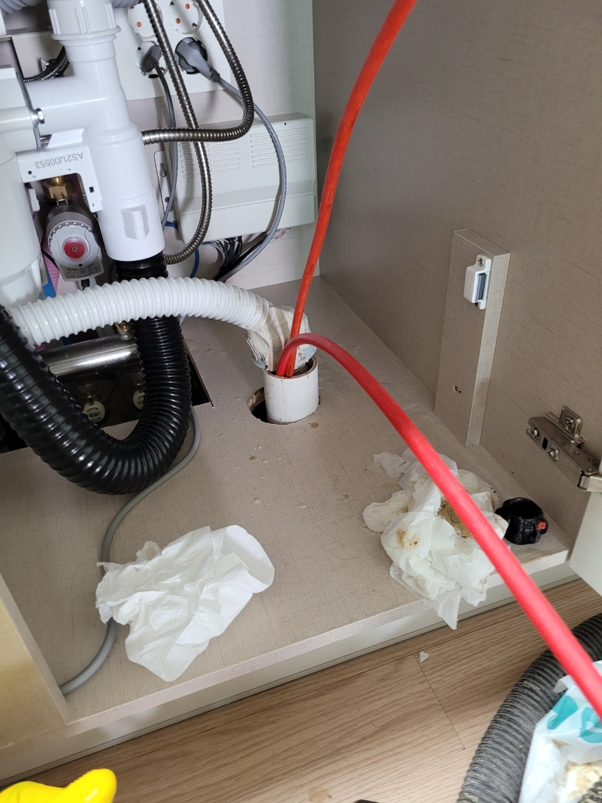
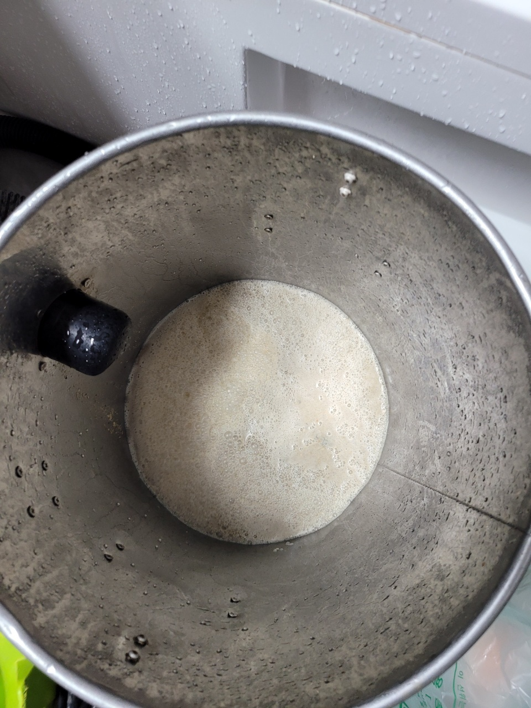

🏠 권선구싱크대막힘 오목천동 호매실동 싱크대악취해결 완료한 현장입니다!
수원 싱크대막힘 전문 시공 후기

📋 작업 개요
- 위치: 수원
- 서비스 유형: 싱크대막힘, 하수구막힘, 배관막힘, 역류해결, 고압세척
- 작업 일시: 2022. 10. 17. 18:11
- 업체명: 하수구수사대 (010-5615-2118)
🔍 문제 상황
안녕하세요. 하수구수사대입니다.
평소에 잘 사용을 하던 싱크대에서 갑작스럽게 악취가 올라오게 되거나 물이 느리게 배수가 되는 상황입니다.
그렇게 되면 누구나 당황스럽고 불편함을 느낄 수밖에 없을 것입니다. 이러한 문제점들이 발생하는 원인은 대부분 배관 깊숙한 곳에서부터 발생을 하는 경우가 대부분입니다. 그렇기 때문에 신속하게 전문가를 통해서 해결을 하는 것이 좋은 것입니다.
이번에 소개할 현장은 권선구에 있는 곳으로 권선구싱크대막힘 오목천동 호매실동 싱크대악취해결을 위해서 출동한 곳이었습니다. 지금부터 현장 후기를 알려드리도록 하겠습니다. 저희 하수구수사대는 배관 전문업체로 빠른 출장이 가능하기 때문에 하수구가 막힌 상황이라면 당황하지 마시고 신속하게 문의해 주시기 바랍니다.

🔎 원인 분석
💡 전문가 진단: 평소에 잘 사용을 하던 싱크대에서 갑작스럽게 악취가 올라오게 되거나 물이 느리게 배수가 되는 상황입니다.
권선구싱크대막힘 오목천동 호매실동 싱크대악취해결 방문 현장은
어느 날부터인가 싱크대에서 악취가 지속적으로 유입이 되는 것을 느끼셨는데 그러다 며칠 후에는 아예 막히게 되면서 물이 빠지지 않고 역류까지 발생을 하는 상황이 되었다고 합니다. 그러던 중에 전문업체로 다급하게 문의를 해주신 것이었습니다.
전체적인 문제점을 살펴보았더니 배관 내부에는 각종 음식물 찌꺼기와 기름때가 자리를 잡고 있는 것을 볼 수 있었습니다. 배관 내시경을 통해서 확인을 해보니 일정 구간 부분에서 아예 배관이 막히게 된 것을 확인하였는데요. 신속한 해결을 하기 위해서 고압세척 장비를 진행해 보기로 하였습니다.
경기도 수원시 권선구 매송고색로533번길 7 상가동 B층 01호 298

🔧 작업 과정
배관 내시경을 통해서 정확하게 막힌 구간부터 확인을 한 뒤에 먼저 보양 작업을 진행해 주었습니다.
고압세척을 하기 전에 비닐을 이용해서 보양 작업을 하는 이유는 천장에 위치해 있는 배수관을 먼저 세척을 해야 하기 때문인데요. 그러므로 이물질들이 주변으로 흐르지 않게 하기 위해서는 보양 작업을 제대로 해주는 것이 필요하다고 할 수 있습니다.
작업을 하다 보면 모든 이물질들이 바닥에 떨어질 위험이 있기 때문에 이를 예방하기 위해서 보양 작업을 꼼꼼히 진행해 준 뒤에 세척을 시작하는 것입니다. 본격적으로 고압세척을 진행을 하면서 내부에 남아 있는 이물질이 없는지 내시경으로 확인을 하면서 작업을 하였습니다.
오래 방치된 이물질의 경우에는
배수관 벽면쪽으로 강력하게 흡착이 되어 있는 경우가 많기 때문에 쉽게 떨어지지 않을 수 있습니다. 그러므로 저희 하수구수사대에서는 항상 현장 상황에 맞도록 유연하게 작업을 하기 위해서 내시경을 필수로 사용해서 작업을 하고 있습니다.
권선구싱크대막힘 오목천동 호매실동 싱크대악취해결 배관 곳곳에서 막힘이 발생한 것을 확인을 하였고 구간마다 쌓여있는 이물질들을 제거하기 위해서 고압세척 장비를 이용해서 반복작업을 하였습니다. 오랫동안 쌓인 각종 생활 이물질들이 배수관에 고스란히 남아서 방치되고 있었던 상황이었습니다.
이렇게 많은 양의 이물질들이 오랜 시간 동안 방치가 되어 버리게 되면 부패가 진행될 수밖에 없는 것입니다.


✅ 작업 완료
이물질이 부패가 되는 과정에서는 상당히 심한 악취가 발생할 수 있는데요 고압세척을 하게 되면 이러한 악취들까지 모두 잡을 수 있기 때문에 아주 유용한 장비라고 할 수 있습니다. 업체마다 보유하고 있는 장비가 다르기 때문에 이러한 장비를 보유하고 있는지를 확인을 하시는 것이 좋습니다.
고압세척을 하면서 배관 내부에 있는 이물질들은 보양 작업을 한곳을 따라 빠지기 때문에 주변이 지저분해질 염려가 없습니다. 구간마다 확인을 하면서 고압세척을 통해서 이물질 제거를 모두 완료를 하였는데요. 물이 잘빠지고 더 이상 악취가 나지 않는 것을 확인한 후에 작업을 마무리하였습니다.



⚠️ 주방 싱크대 배관 막힘 예방 수칙
- ✅ 기름기가 묻은 식기나 프라이팬은 설거지 전 키친타올로 반드시 기름때를 닦아내세요.
- ✅ 주기적으로 싱크대 개수대에 뜨거운 물을 가득 받아 한 번에 내려 배관 내부 기름을 씻어내세요.
- ✅ 배수구 거름망을 미세한 필터로 사용하시고 음식물 찌꺼기가 틈으로 새어 들지 않게 관리하세요.
- ✅ 베이킹소다와 식초를 뜨거운 물과 함께 일주일에 한 번씩 부어주면 배관 살균과 막힘 예방에 좋습니다.
💡 핵심 정리
- 확실한 장비 작업(내시경 점검 및 샤프트 스케일링)으로 원인을 뿌리 뽑습니다.
- 작업 후 1년 이내에 동일한 부위 재발 시 100% 무상 A/S 서비스를 보장합니다.
- 서울 · 경기 · 인천 전 지역에 24시간 언제든 긴급 출동할 수 있도록 항시 대기 중입니다.
❓ 자주 묻는 질문 (FAQ)
🚨 수원 싱크대막힘 문제로 고민이신가요?
정확한 원인 진단과 확실한 시공으로 재발 없는 해결을 약속드립니다.
24시간 긴급 출동 | 서울 · 경기 · 인천 전지역 | 1년 내 재발 시 무상 A/S